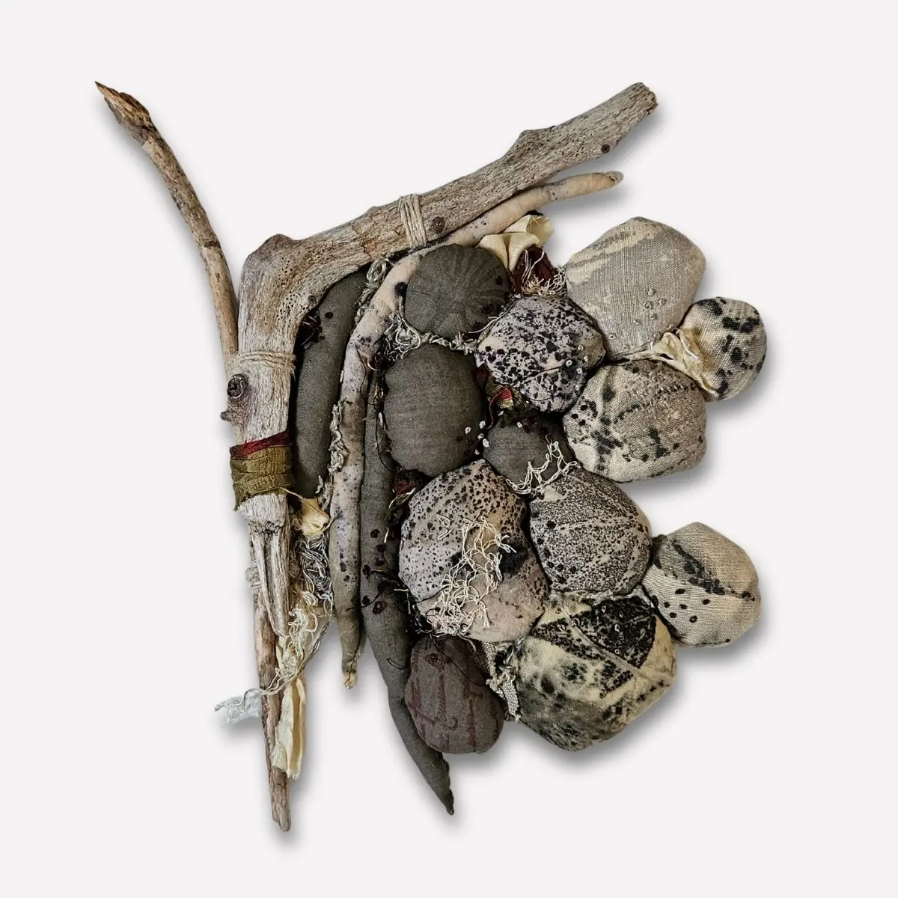

Œuvres en volume
Par leur relief et leur ombre, elles dialoguent autrement avec le mur qu’un tableau : elles occupent l’espace, captent la lumière, créent une tension douce entre matière et silence. Chaque pièce est unique.
Voir les totems végétaux